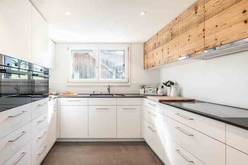

Bieri Küchen
Der Raum, in dem vieles zusammenkommt.
Bieri Küchen ist ein Schwerpunkt der Schreinerei. Dazu gehören Schränke, Möbel und der Innenausbau für andere Räume.
Im Wohnraum
Küche. Möbel. Bad.
Schreinerarbeiten für den Alltag zu Hause.
Küchen
Schränke & Möbel
Badezimmer
Böden
Darüber hinaus
Auch jenseits der eigenen vier Wände.
Parkett, Laminat und Vinyl gehören ebenso zum Angebot wie Umbauten sowie Gastro- und Ladenbau.
Kontakt / Nebikerstrasse 40 · 6247 SchötzFredy Bieri AG
Erzählen Sie uns von Ihrem Raum.
041 980 13 81